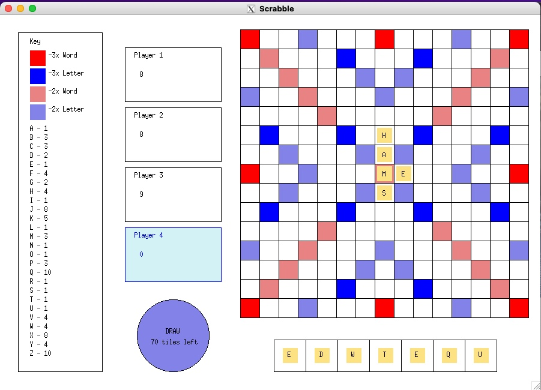

This game mimics online Scrabble, in which players can pass a computer around to play. It was coded in OCaml, a functional programming language, and displayed using OCaml graphics. I worked with two others on this project.
I coded the functionality of the player tiles — how the user clicks and drags them, as well as how each player's tiles are stored in the backend. The game also has an automated scoring system, which I contributed a large part of.